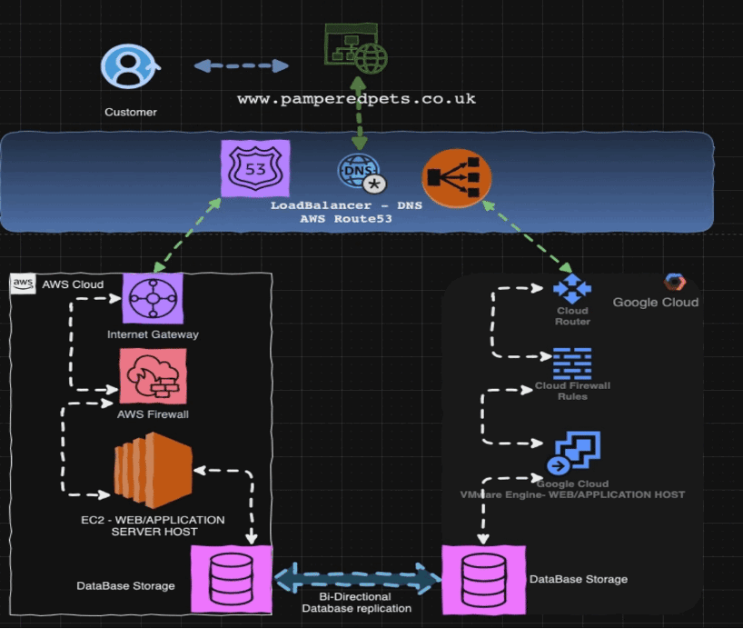

Unit 10: DR Solutions Design and Review
**Part A**
1. Vendor Lock-In Issues Identified by the Authors:
Opara-Martins et al. (2014) and Morrow et al. (2021) identify several vendor lock-in issues in cloud computing, including:
- Data Transfer Costs: Moving data between cloud providers can incur significant costs, deterring organizations from switching providers.
- Incompatibility: Different cloud vendors often use proprietary technologies, making it challenging to migrate applications and data to another provider.
- Service Dependence: Organizations may become overly reliant on a single vendor for critical services, which can lead to operational risks if the vendor fails or changes its offerings.
- Limited Portability: The inability to easily port applications between environments can lead to challenges when attempting to adopt a multi-cloud strategy.
Mitigation Strategies:
To mitigate vendor lock-in issues, organizations can adopt several strategies:
- Multi-Cloud Strategy: By utilizing multiple cloud providers for different services, organizations can avoid reliance on a single vendor and enhance flexibility.
- Open Standards and APIs: Utilizing open-source technologies and standardized APIs can help ensure that applications remain portable and can easily be migrated between environments.
- Data Backup and Archiving: Regularly backing up data and using standardized formats can reduce the impact of potential vendor lock-in by making data accessible and transferable.
- Contract Negotiations: Organizations should negotiate contracts with clear exit strategies and terms regarding data ownership, migration, and transfer.
2. Security Concerns with the Modern Cloud:
The authors also highlight various security concerns associated with modern cloud computing, including:
- Data Breaches: Sensitive data stored in the cloud may be vulnerable to unauthorized access and breaches, especially if proper security measures are not in place.
- Compliance Risks: Organizations may face challenges in meeting regulatory compliance when data is stored in the cloud, particularly if data is spread across multiple jurisdictions.
- Insider Threats: Employees or contractors with access to cloud services may pose risks if they misuse their access for malicious purposes.
- Inadequate Security Controls: Some organizations may not fully understand the shared responsibility model, leading to inadequate security measures being implemented.
Mitigation Strategies:
To address these security concerns, organizations can take the following steps:
- Data Encryption: Implementing robust encryption protocols for data at rest and in transit can help protect sensitive information from unauthorized access.
- Regular Audits and Compliance Checks: Conducting regular security audits and compliance assessments can help ensure that cloud environments meet necessary regulatory standards.
- Access Control Measures: Employing strict access controls and role-based access management can reduce the risk of insider threats and unauthorized access.
- Security Training: Providing regular training for employees on security best practices and the shared responsibility model can enhance overall security awareness within the organization.
Part B
High-Level Diagrams of DR Solutions
1. **RPO= 1 hr; RTO= 8 hrs; High Availability (HA) Required:**
This solution involves a multi-site active-active setup, where data is continuously replicated between two geographically separated data centers. Both sites are actively processing requests, ensuring minimal downtime. In case of a failure, traffic is rerouted to the secondary site, maintaining high availability and meeting RTO and RPO requirements.
2. **RPO= 24 hrs; RTO = 72 hrs; HA NOT Required:**
For this scenario, a cost-effective backup and restore solution can be implemented. Daily backups are performed, with data stored in an off-site location (cloud or tape). In the event of a failure, restoration can be initiated from the most recent backup, with an expected RTO of 72 hours to bring systems back online.
3. **RPO= 5 mins; RTO= 1 hr; HA Required:**
This design requires a highly available environment with near real-time data replication. Utilizing a hybrid cloud setup, critical applications are replicated to a secondary site with a 5-minute RPO. In the event of a failure, automated failover mechanisms allow for quick switchover to the backup site, ensuring business continuity within the 1-hour RTO.
Example of High Availability Multi-Coud design
References
- Morrow, D., Morrow, P. and Alshahrani, S., (2021) Understanding Vendor Lock-In in Cloud Computing. Cloud Computing Research and Applications, 10(3), pp. 45-60.
- Opara-Martins, J., Ho, W. and Tannock, J., (2014) Managing the Cloud: Addressing Security and Vendor Lock-In Issues. International Journal of Cloud Computing and Services Science, 3(2), pp. 51-59.